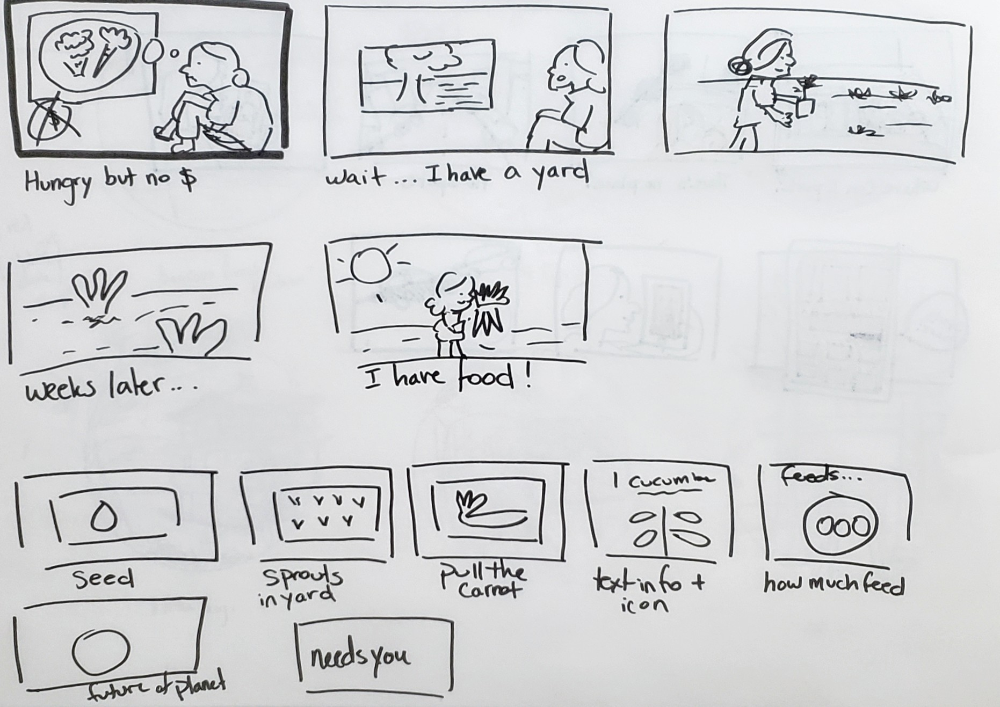
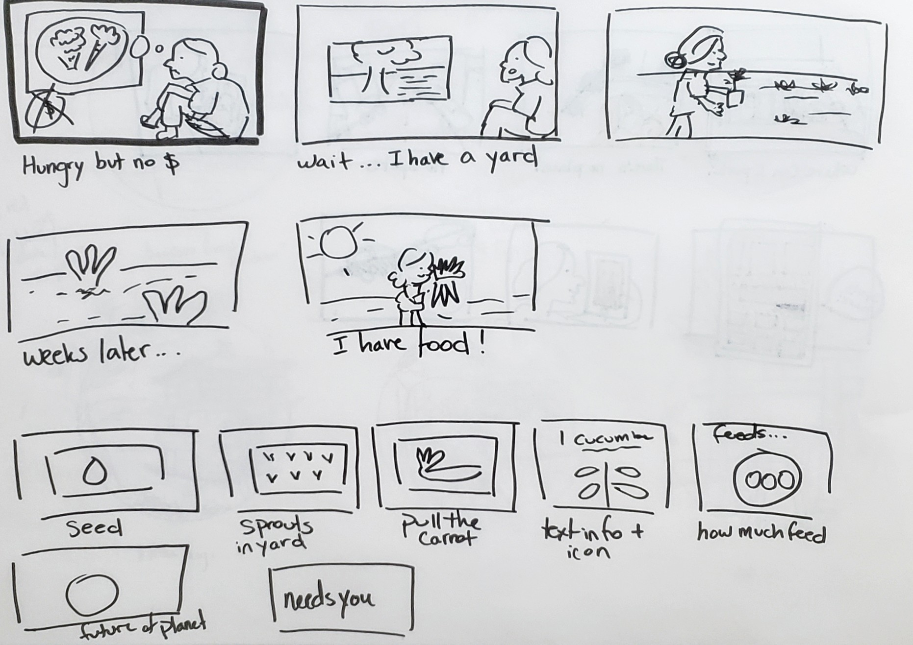
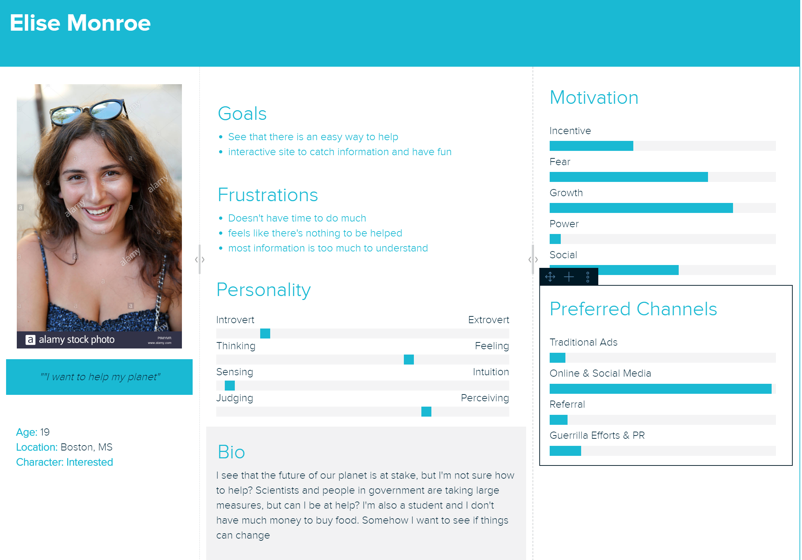
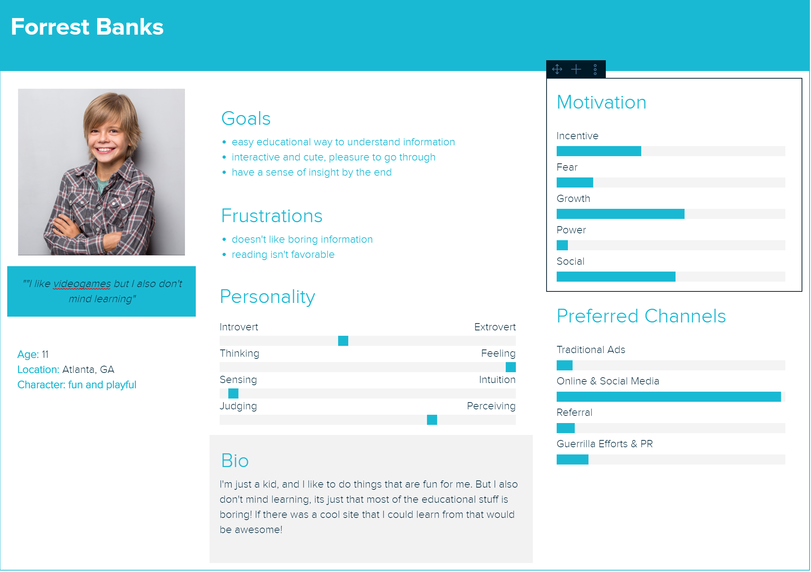

By getting an understanding of my audience, it will make it easier to perceive how I should go about my project. Since there are many possibilities, I have to make sure to narrow the site to a specific format.
By getting an understanding of my audience, it will make it easier to perceive how I should go about my project. Since there are many possibilities, I have to make sure to narrow the site to a specific format.
By understanding the different personas, it will be useful in a way to gear towards a certain age group, certain ideals, or towards what people are looking for that they currently don't have.
 